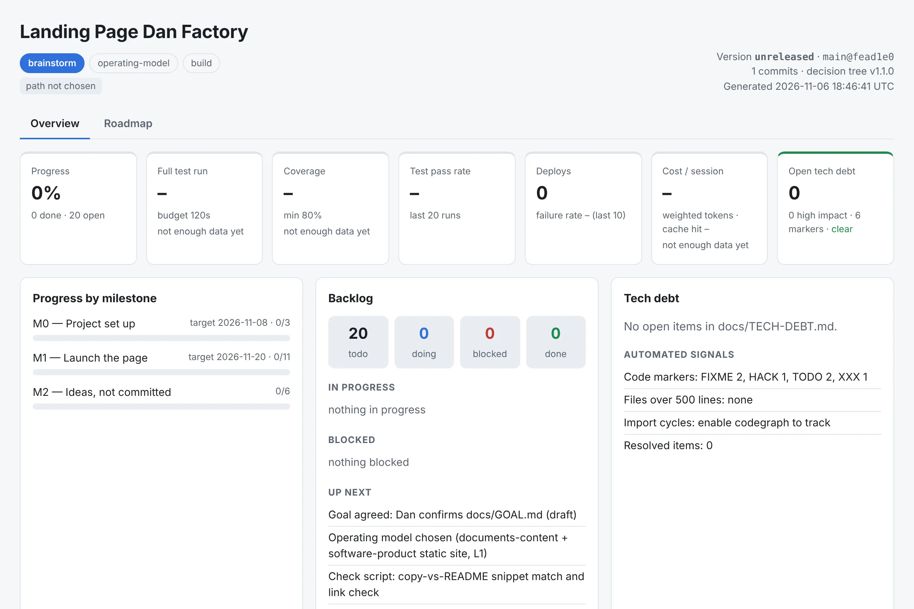

A free template for Claude Code, by Dan
Vibe code with Claude. Without the wall.
danfactory is a free starter kit that gives your AI-built project a goal, a plan, tests, short contexts and a live dashboard, so it keeps working as it grows.
● Free. Open on GitHub. No signup, no tracking.
Example dashboard · sample data
The wall
Vibe coding is great, until the project gets big
The first 80% feels like magic. Then this happens.
danfactory is a set of rails for exactly these five problems. Not a framework. A template you own.
Why it exists
Built by Dan, for builders
Dan built danfactory to start Claude Code projects with a guided plan instead of a blank prompt, and is sharing it back with the community for free.
One template that gives you a guided start, saves tokens by design, keeps your docs indexed, tracks delivery metrics, runs security audits when you ask, and deploys to Cloudflare via git.
It's for you if
- You started in Lovable, Bolt, v0 or Claude and your project is outgrowing the chat.
- You build with AI but aren't a professional engineer, and want guardrails, not a lecture.
- You use Claude Code and want leaner sessions and numbers you can see.
Probably not for you if
- You need a hosted product or support. This is a template you run yourself, and it needs git and python3.
How it works
Three phases, in order. No code until the goal is agreed.
Say "let's start" and Claude knows which phase you're in.
Agree the goal
The brainstorm skill talks it through with you until "done" is written down.
Choose how to work
The choose-path skill walks a decision tree and a rigor dial, then records why you decided (an ADR: a short decision note).
Build
Follow the path playbook with subagents. At milestones, retro and metrics record what you learned.
The rigor dial: the highest signal wins. Also on demand: security-audit-run (audit report) and ship (live deploy).
The agent team
18 agents, but not all at once
Cheap models do the heavy reading. Smart models make the calls. A routing table decides who works when.
A verification ladder decides how many checkers a task gets: none at L0, up to five at L3. A subagent is a helper Claude with its own fresh context that returns a short answer. Verifiers and debugger adapted from darcyegb/ClaudeCodeAgents (MIT).
Paths
A spreadsheet isn't run like a SaaS app
Eight paths, each with its own playbook. Plus one for adopting what you already built.
software-productApps, APIs, services
Vertical slices, TDD, CI, git → Cloudflare
library-cliPackages, SDKs, CLIs
API-first, semver, examples as tests
data-spreadsheetWorkbooks, models, CSV/reports
Generator scripts + xlsx skill
documents-contentDocs, decks, handbooks
Outline-first, docx/pptx/pdf skills
research-analysisResearch, comparisons
Deep-research fan-out, sources ledger
automation-scriptGlue, jobs, bots
Idempotent, dry-run, cron on Cloudflare
infra-opsIaC, pipelines, DNS
Plan/apply split, least privilege
prototype-spikeThrowaway learning
Time-box, kill/promote date
TDD = write the test first, then the code that passes it. A vertical slice = one thin piece that works end to end.
Traceability
See where your project actually is
Every build regenerates a single-page dashboard from your own files. No account, no service, no JavaScript, no network calls.
- Versions and phase/progressKnow which phase you're in and how far along each milestone is.
- BacklogRead straight from
docs/BACKLOG.md: todo, doing, blocked, done. - Tech debtShortcuts you chose on purpose, from
docs/TECH-DEBT.md, plus automatic signals like TODO markers and oversized files. - Key metricsTests, coverage, deploys and tokens, with alerts when a budget is breached.
- Roadmap tabYour proposed sequence as two swimlanes, user value vs technical foundation, so you see if you're only shipping features and neglecting the base.
All in plain files in git. CI rebuilds it on every push and uploads it as an artifact.
python3 scripts/dashboard.py --open # build + open the project dashboardpython3 scripts/dashboard.py --print
--print gives Claude a one-screen status instead of re-reading your whole repo. That's the token economy in action.Real, not a render
This is the actual dashboard of this very page, built with danfactory, on day one: phase brainstorm, the backlog written by the product-manager agent, metrics waiting for their first run. Honest by default.

scripts/dashboard.py on its first commit.Token economy & short contexts
Spend tokens on decisions, not on moving bytes
Short contexts, cheap helpers, and a guard that stops Claude loading giant files. Context = what Claude can see right now. Compacting = summarising it to make room.
A hook blocks whole reads of files over 350 lines unless a slice is requested. Read the docs index first, then only the lines you need.
Past 120k tokens of context, a nudge appears. The handoff skill writes a short note, you /clear, and the note reloads automatically.
Big reads, test logs and deploy watching go to cheap helpers. Tokens per session are recorded with a weighted budget, so you see real cost.
Why short contexts? NVIDIA's "You don't need long context" kept agents within about 2 points of full history by compacting often; in one setting, 70.2% vs 70.0% on SWE-bench Verified with Claude Opus 4.5. That's one reported setting, not a promise for your project.
Vibe coding with Claude
7 habits that make vibe coding last
Good habits first. The template makes them the default, so you don't have to remember them.
- Agree a goal first.Write what "done" means before any code.brainstorm → GOAL.md · no code until it's confirmed
- Pick an operating model.A prototype and a payment app need different care.choose-path · rigor dial L0–L3
- Keep contexts short, hand off often.One task per session. Save a note, /clear, continue.handoff · context-watch hook
- Delegate big reads.Don't make the smart model read logs.bulk-reader · test-runner · file-size guard
- Test before you call it done."Done" means tests pass, docs updated, backlog ticked.definition of done in CLAUDE.md · metrics.py test
- Push and keep going.A push is the deploy; a background watcher reports back, with bounded waits.ship · deploy-watcher · async-delivery policy
- Retro, and feed learnings back.At milestones write down what worked, tag shared lessons
[upstream], and send them to the template, so the next project starts smarter.retro · upstream_learnings.py
Lovable · Bolt · v0
Already built something? Bring it along
Install danfactory as a Claude Code plugin and run one command inside your repo. It works on a danfactory/adopt branch and never overwrites your files.
/plugin install danfactory --marketplace dalhhorn-ship-it/danfactory
/danfactory:adopt
Lovable specifics (two-way sync, Supabase RLS, moving hosting to Cloudflare) are in docs/operating-model/paths/adopt-existing.md. Without plugins, bash scripts/install-adopt-skill.sh from a danfactory clone installs /danfactory-adopt.
- Scans what was built (origin, stack, tests, CI, hosting, security and quality findings) into
docs/ADOPTION-REPORT.md. - Chooses the operating model with the decision tree.
- Installs hooks, agents, skills, scripts, the docs index and CI; merges settings,
CLAUDE.mdand.gitignore. - Drafts GOAL.md from the as-built state, seeds BACKLOG.md and TECH-DEBT.md, builds the dashboard and writes
docs/NEXT-BUILDS.md.
Get started
Start in three commands
Needs git and python3. That's it (Node only for optional extras like codegraph and wrangler).
git clone https://github.com/dalhhorn-ship-it/danfactory my-project && cd my-project && rm -rf .git && git init
bash scripts/bootstrap.sh "my-project" "one line description" # flags: --codegraph, --cloudflare (auto-created Worker)claude
Then say "let's start". The SessionStart hook tells Claude which phase you're in.
Handy later: bash scripts/check.sh · python3 scripts/metrics.py test · python3 scripts/dashboard.py --open
Give your next project rails, not rules
Free, open, yours to fork. If it helps, share what you learn back: that's how the template gets smarter.
Credits
Standing on open-source shoulders
danfactory borrows good ideas. Thank you to:
- darcyegb/ClaudeCodeAgents (MIT): the verifier and debugger agents
- Spotify shunt: the delegation idea behind the large-read guard
- codegraph by colbymchenry: local code graph
- cloudflare/security-audit-skill: on-request audits
- davila7 cloudflare-deploy skill: git-to-Cloudflare deploys
- NVIDIA, "You don't need long context": short contexts and handoff notes